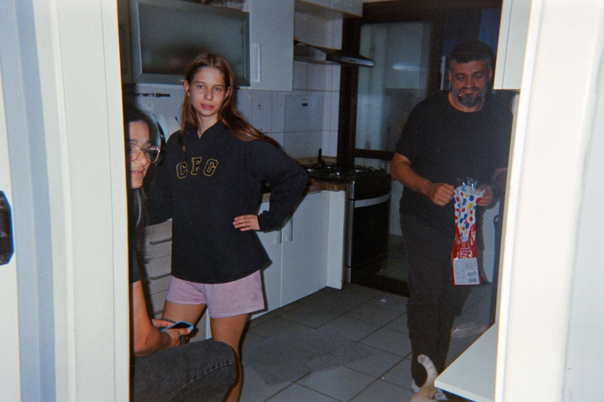
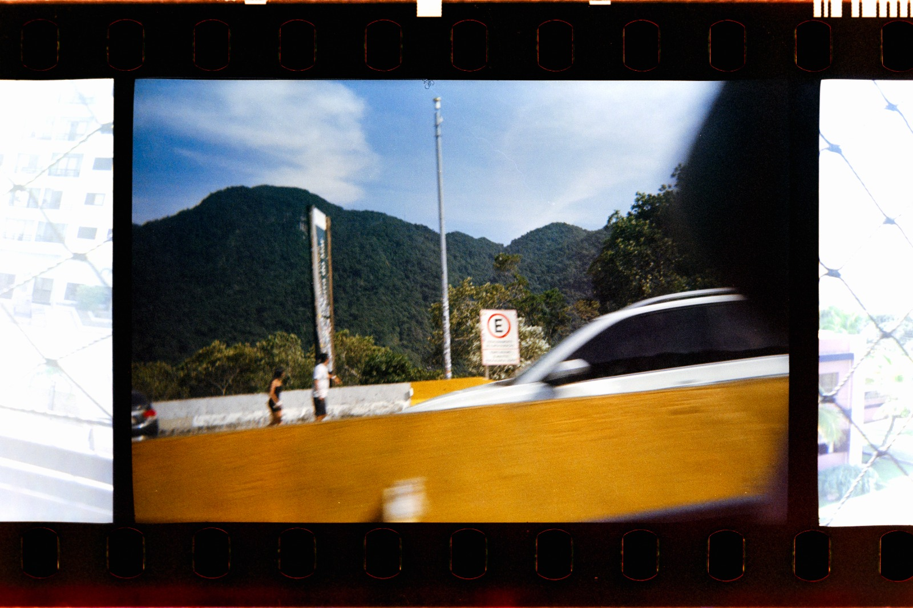
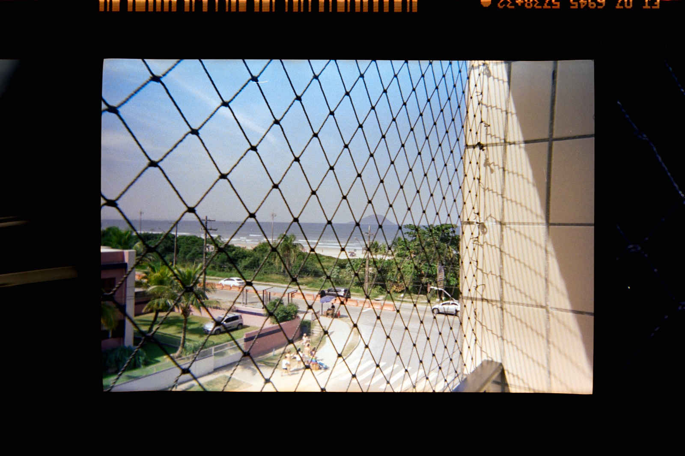
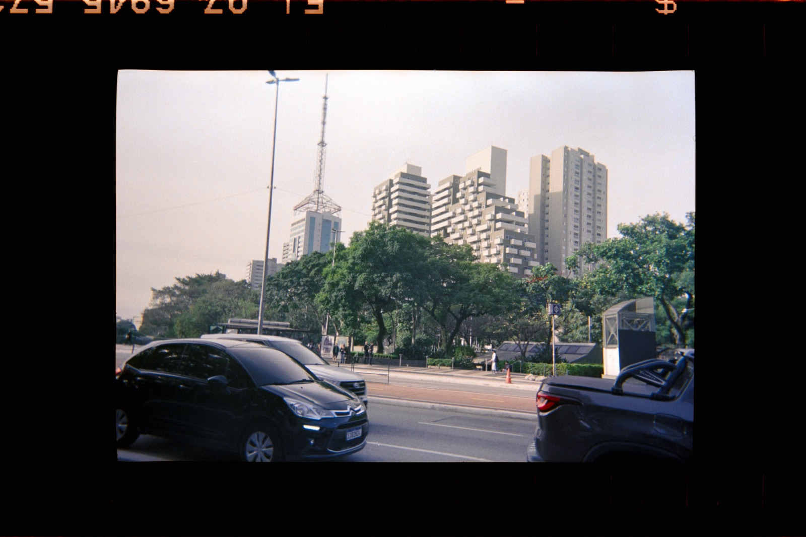
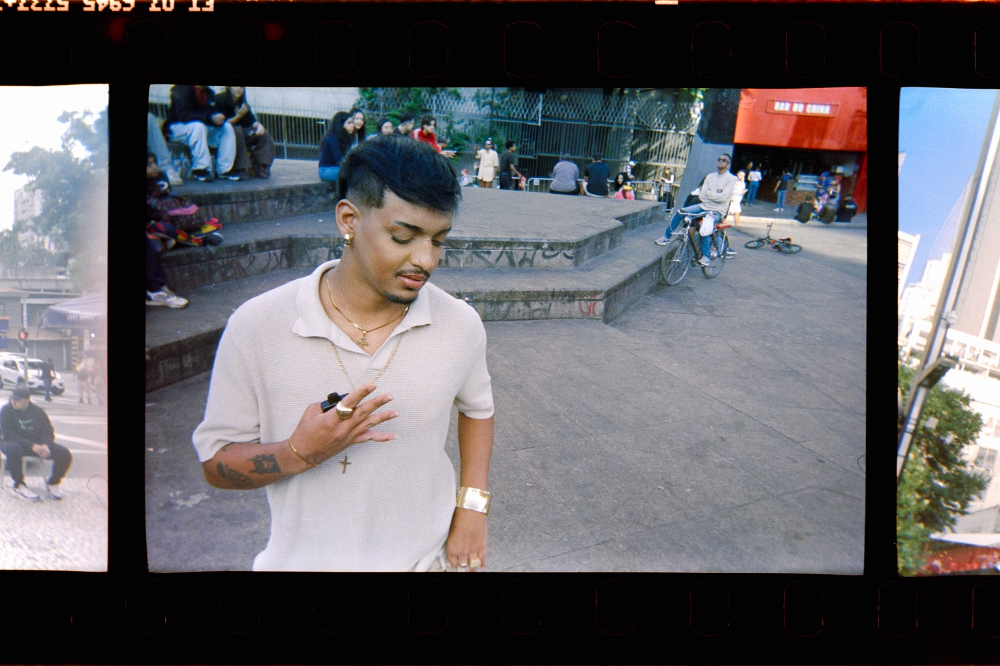
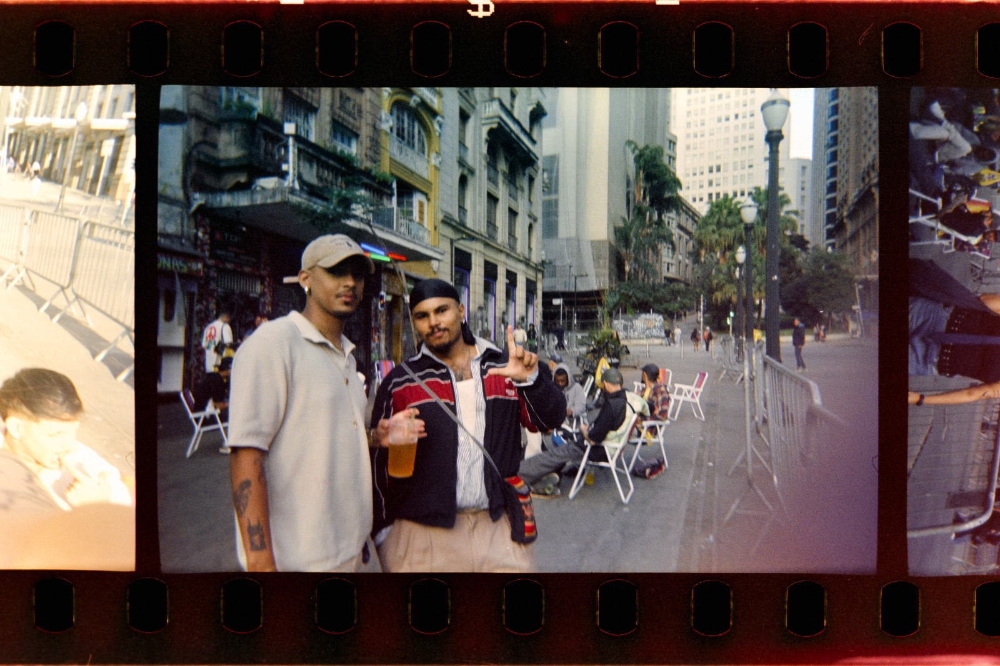
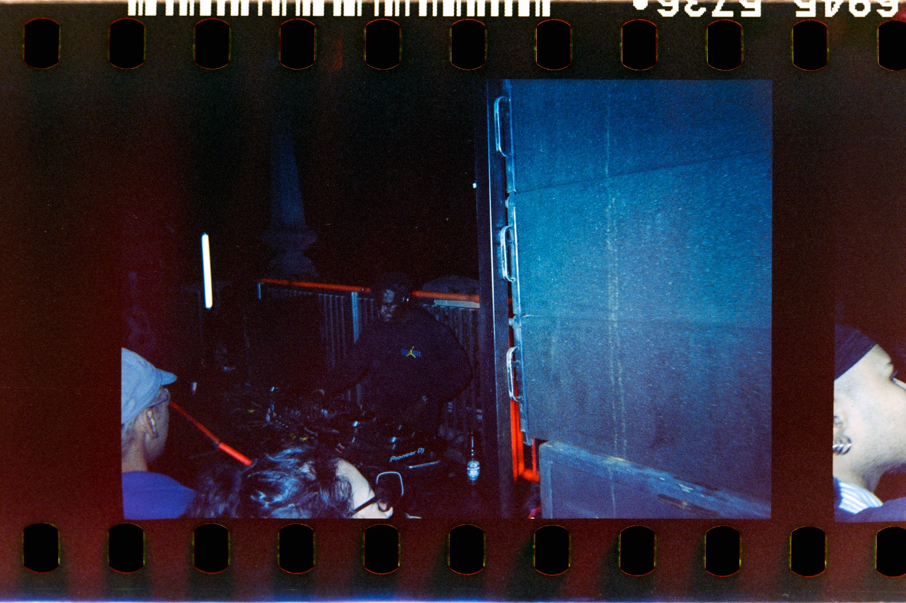
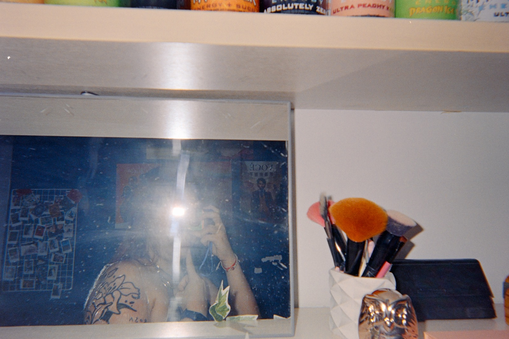

30
POSES
Antes de tudo virar tela, fotografar era escolher. Um rolo de filme, trinta e seis chances, nenhum "ver depois". Este é um ensaio sobre a fotografia analógica, a estética que ela deixou nos anos 2000, e o que a gente perdeu — e talvez esteja recuperando — no meio de tantas telas.
Fotografar era um ato de fé
Numa câmera de filme, você aperta o botão e não vê nada. Nenhuma prévia, nenhum "tira de novo que ficou melhor" (eu já tentei, não rola). Você calcula a luz, acerta o foco na mão, escuta o clique do obturador e segue a vida, confiando que, dias ou semanas depois, aquele instante vai existir de verdade — revelado, físico, irreversível.
Esse é o contrário exato de como fotografamos hoje. O celular te dá o resultado antes mesmo de você guardar o aparelho no bolso. Se não gostou, apaga. Tira de novo. E de novo. A régua que media o valor de uma foto — o limite de 30 poses — sumiu, e com ela sumiu também uma certa disciplina de olhar: pensar antes de clicar, porque o clique custava alguma coisa.
A estética que vem do filme — o grão, o vazamento de luz, a cor que desbota de um jeito específico, o desfoque que não dá pra corrigir depois — não é defeito. É a marca de um processo que aconteceu no mundo físico, não só em um sensor. Cada imperfeição é prova de que luz de verdade tocou um material de verdade.
Cromado, pixelado, imperfeito
Os anos 2000 tiveram uma estética própria porque a tecnologia ainda era visivelmente tecnologia. Ninguém fingia que uma foto de câmera digital compacta era "perfeita" — ela vinha com ruído de ISO alto, flash estourado na cara de quem estava mais perto, olhos vermelhos, datas em LCD laranja cravadas no canto do quadro. E ninguém se importava, porque a imagem não precisava ser perfeita: precisava ser a prova de que você tinha estado lá.
Flash estourado
A câmera descartável de festa, o flash automático que queimava metade da imagem — hoje isso virou filtro, mas ali era só a física do momento.
Interface cromada
Botões biselados, texturas metálicas, gradientes de CD-ROM: o design da época não escondia que era feito de pixels — ele comemorava isso.
Fotolog e Orkut
Álbuns públicos, comentários datados, uma internet mais lenta e mais cheia de atrito — publicar uma foto era um evento, não um reflexo.
Selfies de webcam
Baixa resolução, luz de monitor, ângulo torto: a estética "MSN" nasceu de limitação técnica e virou linguagem visual reconhecível até hoje.
Existe uma ironia bonita aqui: a estética anos 2000 e a estética analógica se encontram porque as duas carregam o mesmo recado — a tecnologia tinha limite, e o limite tinha personalidade. Hoje a tendência é apagar qualquer rastro de que uma máquina esteve envolvida. Naquela época, o rastro da máquina era o estilo.
Fotos tiradas por mim,
na minha analógica (descartavel)
Esse é o contato do rolo de verdade — sem tratamento, sem IA, só o que a luz fez com o filme.
a 09A saiu tremida e eu decidi que gosto assim










rolo revelado · sem edição digital · @wlehtz
Quanto tempo você emprestou
à tela hoje?
Esta não é uma reflexão só de nostalgia. Tem dado real por trás. O Brasil está entre os países que mais vivem conectados a telas no planeta — e isso muda a forma como criamos e consumimos imagem.
O contraste Brasil–Japão chama atenção: um país tido como referência em tecnologia registra menos da metade do tempo de tela do brasileiro médio. Tempo de tela não é sinônimo de avanço tecnológico — é uma escolha cultural sobre onde colocar atenção. E atenção, hoje, é o produto mais monetizado que existe: cada minuto de tela vira dado, anúncio ou engajamento. (Eu mesmo checo esses números e me assusto, viu.)
Enquanto isso, alguém
recarrega um rolo de filme
No meio desses números, um movimento contrário ganhou força — puxado, em boa parte, pela Geração Z, que não viveu o auge do analógico e mesmo assim está voltando a ele.
O interessante é que quem volta ao filme, na maioria das vezes, não está trocando o celular por ele — está usando os dois. A câmera analógica virou complemento, não substituta: uma forma deliberada de desacelerar em meio a festas, viagens e encontros que, no resto do tempo, seguem sendo vividos e fotografados no digital. É uma escolha de ritmo, não de nostalgia pura.
O que a inteligência artificial não revela
Há alguns anos, fotografar com o celular já deixou de ser um processo puramente manual: o telefone tira dezenas de micro-decisões da sua mão — exposição, foco, cor, nitidez — antes mesmo de você ver o resultado. É a chamada fotografia computacional: você enquadra e aperta o botão, mas boa parte do trabalho técnico é do software, não seu.
O próximo passo dessa lógica é a imagem gerada inteiramente por IA: nenhuma luz precisa tocar nenhum sensor. Não existe mais um "momento" a ser capturado — existe um resultado a ser produzido, infinitamente reproduzível, sempre ajustável, nunca definitivo. É uma ferramenta poderosa, democratiza criação visual para quem nunca teve acesso a equipamento ou técnica. Mas ela também elimina algo que a fotografia sempre carregou consigo: a ideia de que a imagem é prova de que algo aconteceu.
Um negativo de filme é evidência física de que a luz de um instante real passou por ali. Uma imagem gerada por IA não tem esse tipo de lastro — e não precisa ter, porque não promete a mesma coisa.
É por isso que o grão, o erro, o limite de 30 poses voltaram a interessar gente que nunca viveu essa época: não como rejeição da tecnologia, mas como contrapeso. Num mundo onde qualquer imagem pode ser gerada, ajustada ou multiplicada sem esforço, o valor migra para o que resiste a isso — o que exige tempo, escassez, decisão e, sim, imperfeição.
Não é uma questão de escolher um lado. É perceber que cada tecnologia de imagem carrega uma proposta diferente sobre o que significa registrar a realidade — e que vale a pena decidir, conscientemente, quanto tempo e qual tipo de atenção você quer dar a cada uma delas.
Sobre mim
Sou a Letícia, estudante de Análise e Desenvolvimento de Sistemas e alguém que acredita que tecnologia vai muito além do código. Sempre gostei de criar, fotografar e encontrar significado nas pequenas coisas. Este projeto nasceu da vontade de olhar para a fotografia analógica e para a estética dos anos 2000 como um contraponto ao ritmo acelerado das tecnologias atuais. Em um mundo onde tudo é instantâneo, automatizado e descartável, fotografar em filme nos obriga a esperar, observar e dar valor a cada imagem. Mais do que um portfólio, este é um convite para refletir sobre memória, tempo e a forma como escolhemos viver e registrar nossas histórias.
Seguir @wlehtz →Onde eu compro meu filme:
Kodak Máfia
Nenhum rolo desse ensaio existiria sem um lugar pra comprar filme, revelar e digitalizar. O meu é a Kodak Máfia, um laboratório e loja de fotografia analógica no centro de São Paulo — e essa parte do site é uma indicação pessoal, não uma publi paga.
MÁFIA
Kodak Máfia
Um laboratório que trabalha na contramão da digitalização: revela e digitaliza filme, vende câmeras descartáveis no formato retornável (você devolve depois de usar) e comercializa rolos de filme, sempre sujeitos à disponibilidade do estoque.
Foi lá que comprei minha câmera analógica e é lá que revelo os rolos que viram fotos aqui no site.
Visitar @kodakmafia →indicação pessoal, não paga — recomendação genuína de quem compra e revela filme lá